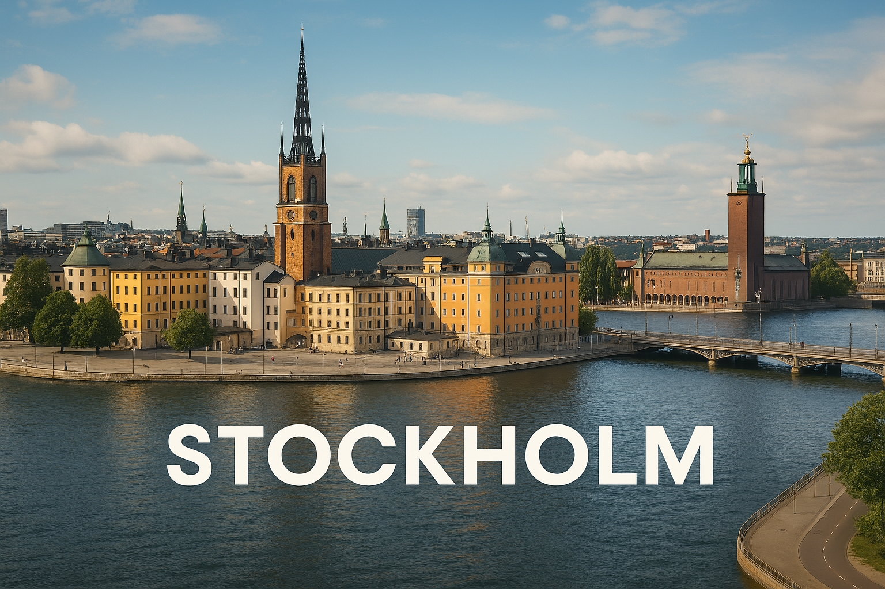

Stockholm est la capitale de la Suède. Construite sur plusieurs îles, elle est entourée d’eau et célèbre pour son centre historique, le palais royal et ses ruelles colorées.
Stockholm est surnommée la "Venise du Nord" à cause de ses nombreux ponts et canaux ! 🌉
Quel est le surnom de Stockholm ?